GREENRIVER
·acoustic·country·and·folk·
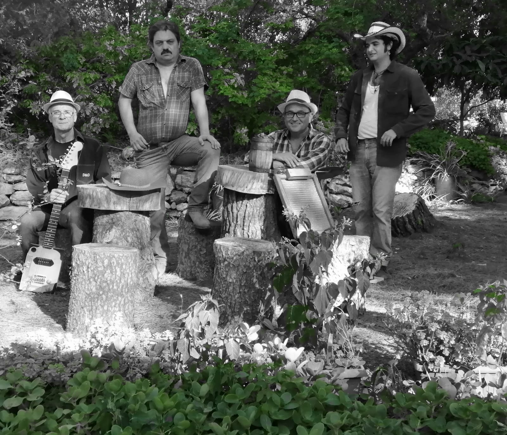
"… GREENRIVER és un grup musical català de nova formació que recrea l’estil folk americà dels 60 entrellaçat amb el country-rock de finals de l’època hippie…"
1 Què oferim?
1.1 El nostre format musical
Música en directe en format acústic que pot encaixar en qualsevol esdeveniment de petit format i volum moderat com terrasses , restaurants, vermuts.
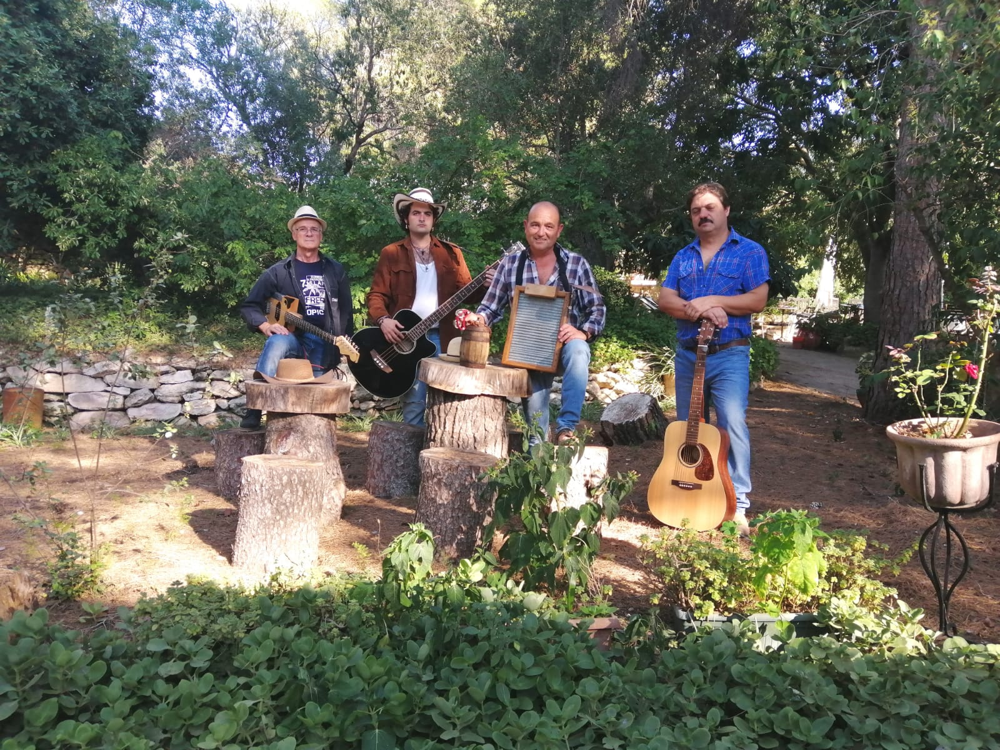
1.2 Un viatge en el temps
Tot plegat us transportarà a l’arrel de la música americana. Un recorregut amb ànima de Creedence i amb essència de Ricky Nelson, Dylan i Elvis per reviure els clàssics del folk i del country.
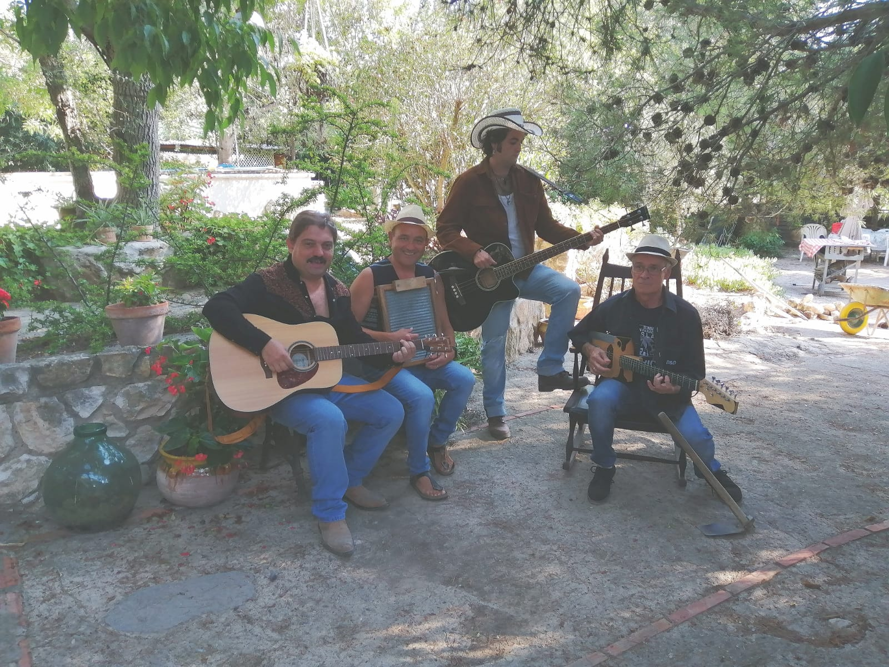
1.3 Una sonoritat autèntica
So característic d’arrels que prové d’instruments de fabricació pròpia com el washboard, molt típic en el so jazz de. New Orleans, la guitarra i el baix són acústics d’estil americà i no hi falta la guitarra cigar box típica del Mississipi.
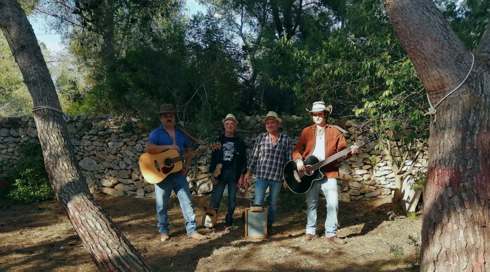
1.4 Escolta una mostra!
Ben aviat!
2 Qui som?
El grup està format per quatre músics de diversa procedència però que coincideixen en assajar clàssics i tastar vi de la Terra Alta:
- Guitarra solista i cigar box
- Jordi Suarez
- Veu i guitarra acústica
- Marc Pi
- Baix acústic
- Arnau Marrugat
- Washboard i percussions
- Ricard Marrugat
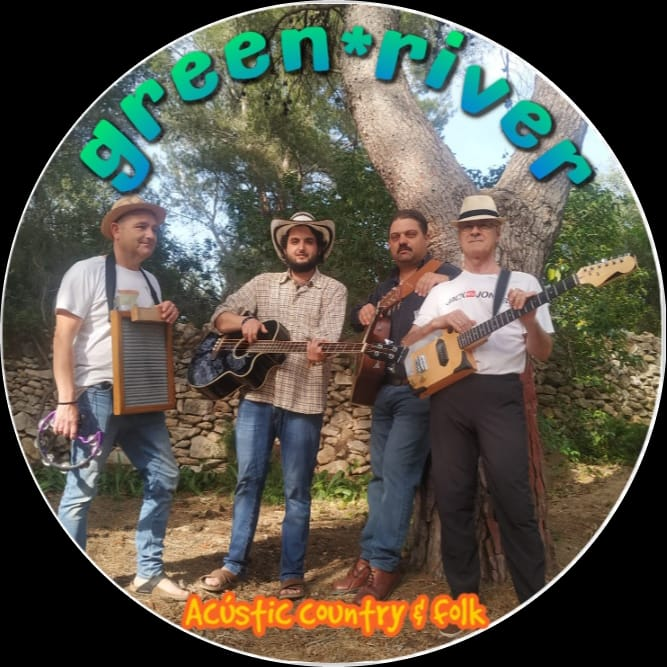
3 Els nostres concerts
3.1 Calendari de propers concerts
3.2 Històric de concerts
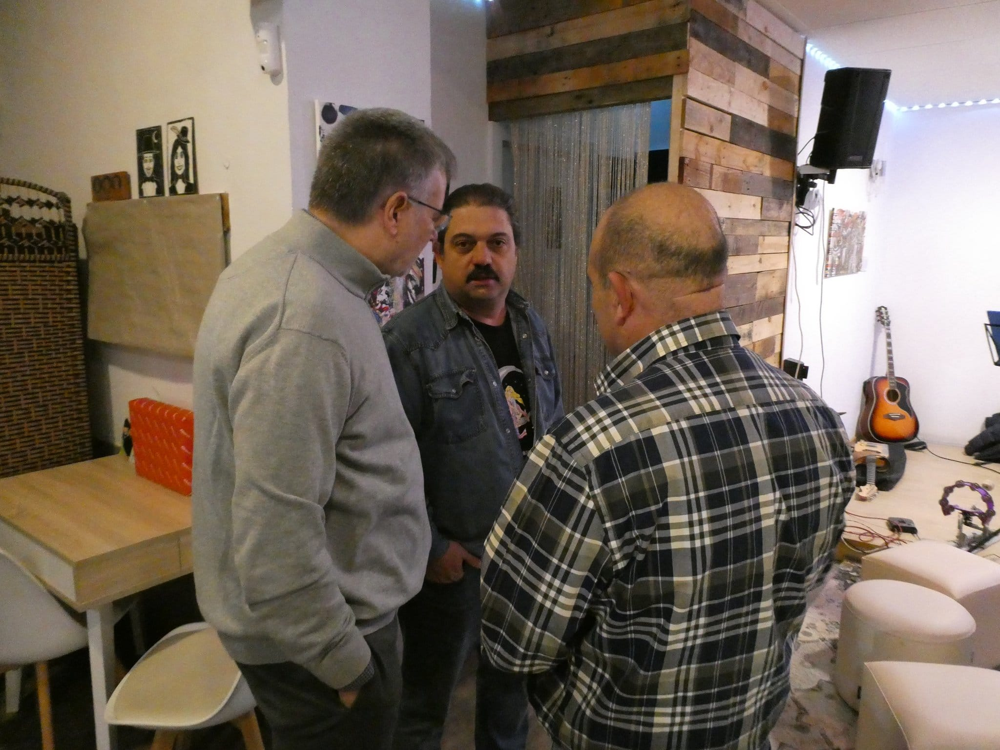
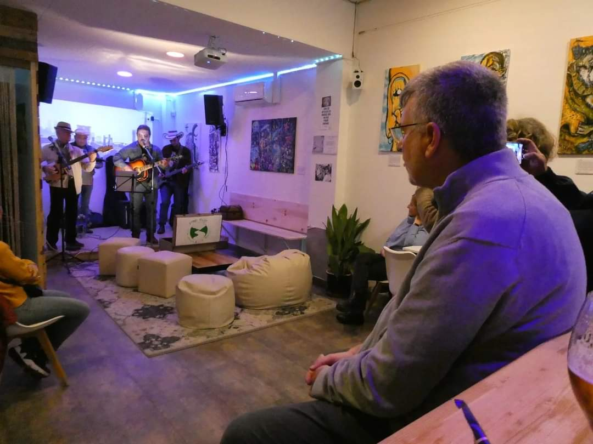
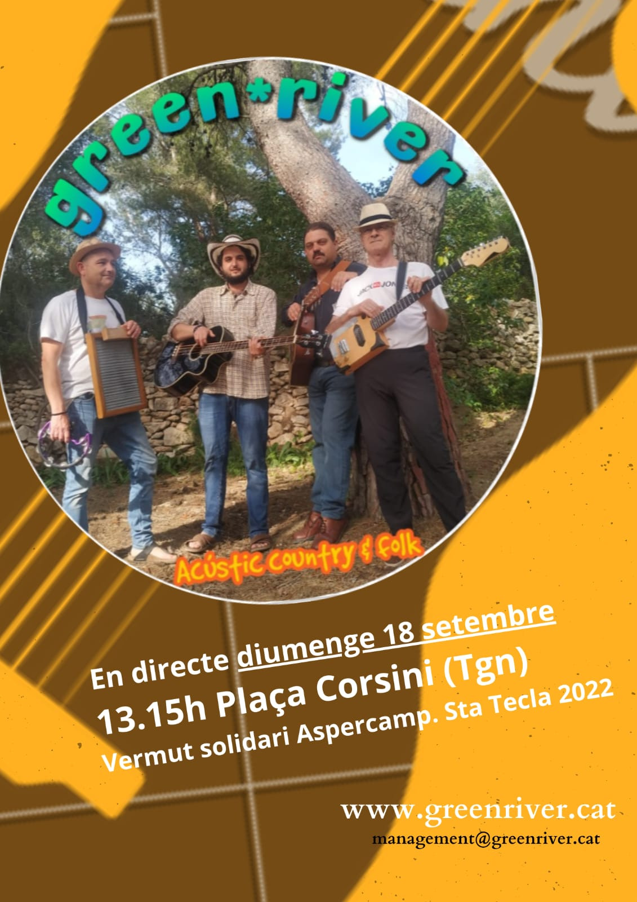
3.3 Venda d'entrades
Els nostres concerts són gratuïts però amb reserva d'entrades. Podeu contactar amb management@greenriver.cat
3.4 Imatges dels nostres concerts
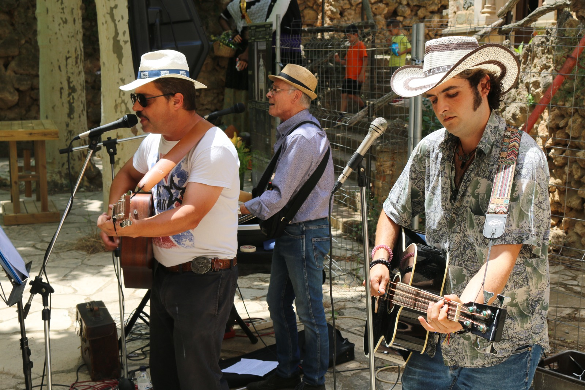 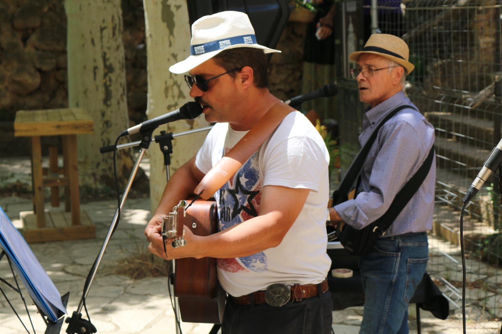
Concert de la Plaça Corsini, del 18 de setembre de 2022:
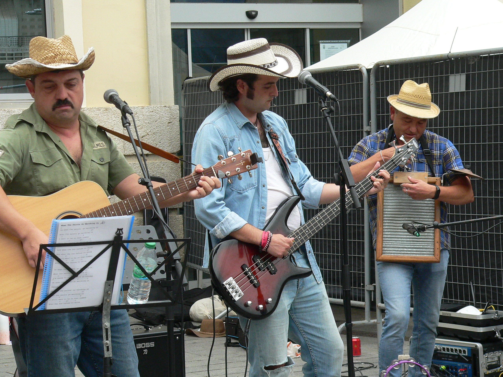

3.5 Recull de premsa
en breu
4 Vies de contacte
4.1 Contractació
Per conèixer les condicions i tarifes de contractació podeu contactar amb management@greenriver.cat
4.2 Informació general
Per qualsevol altre informació del vostre interès, podeu contactar amb management@greenriver.cat
4.3 Xarxes socials
- Enllaç a Greenriver Twitter
https://twitter.com/Greenriverfolk (@Greenriverfolk)
- Enllaç a Greenriver Spotify
- https://open.spotify.com/playlist/79lszzbvyLW7Uzqq8QROVO?si=9a60248ea6cc4a3a
- Enllaç a Greenriver country music a Instagram
- https://www.instagram.com/greenrivercountry/
- Enllaç al canal Greenriver country a Youtube
- https://www.youtube.com/channel/UCPD5C4IcfCp0jU3FwfLVpCw
4.4 Premsa
Per qualsevol altre informació relativa a esdeveniments, notes de premsa i imatges de concerts, podeu contactar amb greenrivercountry@gmail.com
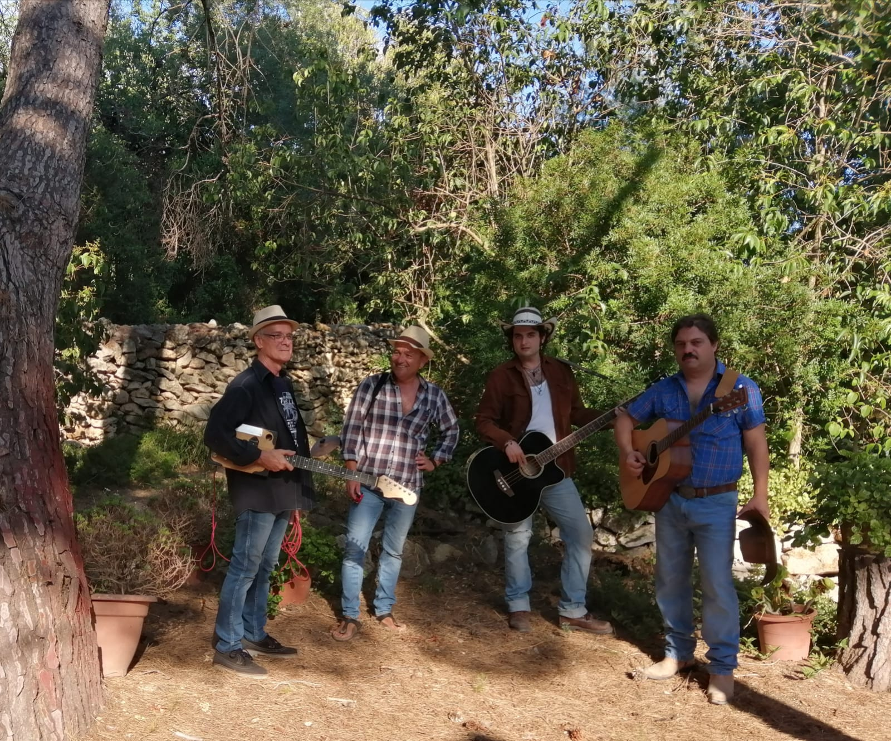